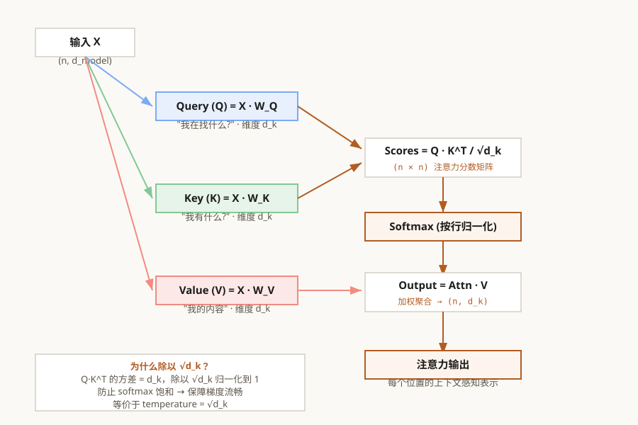

第3章 单头自注意力
从零实现 Scaled Dot-Product Attention——LLM 一切魔力的源头
本章怎么学：把注意力当成“可微检索”
Q @ K.T 得到权重，再用权重加权 V。- 前置知识：矩阵乘法、softmax、张量最后一维的含义。
- 学习目标：从 RNN 长程依赖问题引出自注意力，推导 Q/K/V、缩放因子、softmax 温度、causal mask 和注意力复杂度。
- 本章产出：单头 Scaled Dot-Product Attention 和 Causal Mask。
- 完成标准：你能解释为什么生成第 t 个 token 时不能看未来 token。
- 练习产出：提交手写 attention、mask 单元测试、缩放因子的方差推导，以及一张 attention heatmap 分析；可用 Ch03 注意力作业测试 检查核心实现。
本章内化：这些基础会被放进
QK^T / sqrt(d)、mask-before-softmax、attention row sum、padding/causal 区分和数值稳定 softmax 的实现检查中。验收信号：你能定位 attention bug 属于 score shape、mask 时机、概率归一化还是可见性约束，并说明它会如何影响 Ch04 多头拆分、Ch06 因果 LM 和 Ch08 生成。
系统位置：本章是 Transformer 的计算核心：把每个 token 的表示变成一次可微检索。它向前依赖 Ch02 的向量和位置，向后支撑多头压缩、GPT 因果训练、生成可见性和长上下文服务成本。
学习者知识脑图：先懂什么 / 本章学什么 / 继续读什么
| 学习前需要懂 | 本章会讲清楚 | 扩展阅读材料/知识点 |
|---|---|---|
| Q/K/V 语义 | 把 query 看成当前 token 的问题，key 看成可检索索引，value 看成被加权搬运的信息。 | 材料：Transformer cross-attention、retrieval attention、attention sink 分析。 知识点：head specialization、可解释性、检索式注意力。 |
| softmax 概率 | 强调每一行 attention weight 归一化，温度 scale 会改变熵和梯度。 | 材料：FlashAttention / FlashAttention-2。 知识点：online softmax、IO-aware attention、低精度数值稳定性。 |
| causal 与 padding mask | 区分“不能看未来”和“不能看 padding”，并解释两者在训练和推理中的来源不同。 | 材料：packed sequence、sliding-window attention、block sparse attention。 知识点：mask 组合、prefix LM 可见性、长序列训练。 |
| 复杂度账本 | 把 score 矩阵写成 [B,H,T,T]，直接连接显存、长上下文和服务成本。 | 材料：Longformer、Performer、linear attention、Mamba/SSM 综述。 知识点：稀疏注意力、线性注意力、hybrid architecture。 |
本章覆盖情况：本章已经把 attention 的概率、mask、shape 和复杂度讲清楚；如果继续深入，可读 FlashAttention 的 IO-aware 视角和长序列稀疏注意力，但这些属于性能扩展，不影响本章主线理解。
3.1 为什么需要注意力？——RNN 的困境与注意力的突破
在 Transformer（2017）出现之前，序列建模长期由 RNN/LSTM 主导。理解它们在并行性和长程依赖上的结构性局限，才能真正理解注意力机制为什么成为后续架构的关键选择。
RNN 的工作原理：迭代式压缩
RNN 将序列处理看作一个逐步"压缩"的过程：每读入一个 token ，就将之前的所有信息（存储在隐状态 中）和当前输入一起"融合"，产生新的隐状态：
两个结构性局限
缺陷一：顺序计算瓶颈（Sequential Bottleneck）。计算 必须先知道 ，这造成了严格的顺序依赖。在 GPU 上，这意味着 1000 个 token 需要 1000 个串行步骤——你无法并行处理序列中的不同位置。训练时间随序列长度线性增长。
缺陷二：长程依赖衰减（Long-Range Dependency Decay）。隐状态是一个固定维度的"瓶颈"——无论前面的信息有多丰富，都必须压缩到一个固定大小的向量里。当信息从位置 1 传到位置 1000 时，需要经过 999 次非线性变换。在这个过程中，梯度以指数级衰减（梯度消失）或增长（梯度爆炸）：
当连乘项中许多因子小于 1 时，T 步后梯度会趋近于零，模型很难学习远程依赖。LSTM 的门控机制能显著缓解梯度传播问题，但仍保留顺序计算路径和固定维度状态瓶颈。
注意力的突破：用检索代替记忆
Transformer 的核心洞见非常简洁：不要让信息"穿过"中间位置才能到达目标位置。每个位置应该可以直接"看见"序列中的任意其他位置，直接从源头提取信息。
这就好比：RNN 是让一个人依次经过 1000 个房间，到达最后一个房间时，他只能靠"记忆"来回忆第一个房间的内容。而注意力是给每个房间都装了监控摄像头——任何时候都可以直接查看任意房间的状况。
3.2 Q、K、V 三元组——注意力机制的"检索语言"
Scaled Dot-Product Attention 的核心思想可以用数据库检索来类比：
- Query (Q, 查询)："我想找什么？"——每个位置根据自己当前的语境，主动发出一个"问题"。比如在翻译任务中，"I"想知道自己要对应哪个中文词。
- Key (K, 键)："我有什么信息？"——每个位置产生一个"标签"，描述自己可以提供什么。Query 会和所有 Key 做匹配，找到最相关的信息源。
- Value (V, 值)："我的具体内容。"——匹配完成后，从匹配到的位置提取实际的信息内容。Value 才是最终被聚合到输出中的东西。
为什么需要三个不同的向量？关键在于 Q 和 K 的分离。一个 token 在作为"信息消费者"（发出 Q）和"信息提供者"（提供 K）时，关注点不同。比如在句子"The cat sat on the mat"中，当处理"sat"时：
- 作为 Query，"sat"想要找"谁在 sat？"——所以它的 Q 应该接近表示主语（名词）的 Key
- 作为 Key，"sat"想要告诉别人"这是一个动作"——所以它的 K 应该接近表示动作的 Query
Q 和 K 的非对称性使得注意力能学习有向的依赖关系——"A 关注 B"和"B 关注 A"是不同的。
从输入到 Q、K、V：线性投影
给定输入序列 （n 个 token，每个 d 维），Q、K、V 都通过可学习的线性变换从同一个输入产生：
其中 是可训练的权重矩阵。投影的目的不是"创造信息"，而是重新组织信息——让同一个输入在不同的角色（查询者、被查者、信息提供者）下表现出不同的特征。
这就是"自注意力"中"自"的含义：Q、K、V 都来自同一个序列 X——每个 token 在和自己及其他 token 之间建立关系。

图 3-1: Scaled Dot-Product Attention 完整数据流——从输入到输出
3.3 编程练习 1：实现 QKV 线性投影
现在，请动手实现注意力机制的第一个组件——Q、K、V 投影。
🖥️ 练习 1：QKVProjection 模块
任务：实现一个 PyTorch nn.Module，给定输入 x: (batch, seq_len, d_model)，输出 Q、K、V 三个张量。
要求：
- 使用
nn.Linear定义三个投影矩阵（不要用一个大 Linear 然后 split） - 支持配置
d_model（输入维度）和d_k（每个头的维度） forward返回(Q, K, V)三个张量，每个形状为(batch, seq_len, d_k)
# 预期用法 proj = QKVProjection(d_model=512, d_k=64) x = torch.randn(2, 10, 512) # batch=2, seq_len=10, d_model=512 Q, K, V = proj(x) assert Q.shape == (2, 10, 64) assert K.shape == (2, 10, 64) assert V.shape == (2, 10, 64)
💡 为什么 bias=False？在自注意力中，QKV 投影通常不设偏置。偏置会引入一个绝对的"中心点"，而注意力关心的是 token 之间的相对关系（Q 和 K 的点积），加偏置反而可能干扰这种关系的学习。
3.3A Worked Example：Q/K/V 的 shape 与参数量账本
设一个教学配置为 B=2、T=3、d_model=4、d_k=2。输入张量 X 的形状是 [2,3,4]，三个投影矩阵分别是 W_Q,W_K,W_V，每个形状为 [4,2]。因此：
参数量不是 B*T*d_model*d_k，因为 batch 和 sequence length 不是模型参数；它们只是同一组权重被应用多少次。无 bias 时参数量为：
随后注意力分数来自 QK^T。对每个 batch 样本，Q[3,2] 与 K[3,2] 相乘得到 [3,3] 的 token-to-token score matrix；整个 batch 的 score 形状是 [2,3,3]。再乘以 V[2,3,2] 后，输出回到 [2,3,2]。Ch04 多头注意力会把这个过程复制到多个 head 上，再把各 head 输出拼接回 d_model。
这个例子对应 Ch03 作业中 QKVProjection 的测试：权重参数只来自三个线性层，输出 shape 与 batch/sequence 对齐，后续 attention score 的二次项来自 T*T，而不是参数量增长。
3.4 编程练习 2：实现 Scaled Dot-Product Attention
🖥️ 练习 2：ScaledDotProductAttention 函数
任务：实现完整的 Scaled Dot-Product Attention 前向计算。
核心公式：
要求：
- 输入 Q、K、V 形状均为
(batch, seq_len, d_k) - 返回
output形状(batch, seq_len, d_k)，以及attn_weights形状(batch, seq_len, seq_len) - 支持可选的
mask参数（形状(seq_len, seq_len)或(batch, seq_len, seq_len)），对 mask==0 的位置在 softmax 前设为 -1e9 - 不要使用 PyTorch 内置的
F.scaled_dot_product_attention——手写每一步
# 预期用法 Q = torch.randn(2, 10, 64) K = torch.randn(2, 10, 64) V = torch.randn(2, 10, 64) output, attn = scaled_dot_product_attention(Q, K, V) assert output.shape == (2, 10, 64) assert attn.shape == (2, 10, 10) assert torch.allclose(attn.sum(dim=-1), torch.ones(2, 10)) # softmax 检验
💡 为什么用 -1e9 而不是 -inf？浮点数的 -inf 在某些硬件上可能导致 NaN。使用一个足够小的负数（如 -1e9）既安全又高效，因为 exp(-1e9) ≈ 0 在精度范围内。
3.4A Worked Example：手算一次带 causal mask 的 attention
考虑单个 query 位置 t=2，head dimension 为 。当前位置的 query 与三个 key/value 如下：
| 位置 | Key k_i | Value v_i | 是否可见 |
|---|---|---|---|
| 0 | [1, 0] | [2, 0] | 可见 |
| 1 | [0, 1] | [0, 3] | 可见 |
| 2 | [1, 1] | [1, 1] | 可见 |
| 3 | [2, 0] | [5, 5] | 未来 token，屏蔽 |
令 query q=[1,1]。未缩放 dot product 为 [1, 1, 2, 2]；除以 后得到近似 [0.707, 0.707, 1.414, 1.414]。causal mask 要在 softmax 前把未来位置 3 设为一个很大的负数：
softmax 只在可见位置上归一化，因此分母不是四个位置的和，而是前三个位置：
注意力权重约为 [0.248, 0.248, 0.504, 0.000]。最终输出是对 value 的加权和：
这个例子强调三个实现细节：mask 必须加在 softmax 前；masked 位置不进入 softmax 分母；value 是否很大不重要，只要对应 key 被 mask，权重就是 0，它不会进入输出。
3.4B Self-Attention 的置换等变性：为什么位置仍然要单独编码
如果不加入位置编码，也不使用 causal mask，self-attention 只看 token 内容之间的相似度。给输入序列乘一个置换矩阵 ，Q、K、V 的行会以同样方式重排，注意力输出也只会以同样方式重排：
这不是坏性质：它说明 attention 对集合式输入很自然。但语言序列需要区分“我打你”和“你打我”，所以 Transformer 必须通过 absolute position embedding、RoPE、ALiBi 或 causal mask 等机制引入顺序信息。Ch03 作业中的 self_attention_permutation_error(x, permutation) 用数值方式验证无位置、无遮挡 self-attention 的等变性：比较 Attention(Px) 与 P Attention(x) 的最大误差。
3.5 深入理解：为什么除以 √dₖ？——方差分析与梯度行为
这是 Transformer 论文中看似简单但极为深刻的一个设计细节。让我们从概率论的角度来理解它。
问题：不缩放会发生什么？
假设 Q 和 K 的每个元素是独立同分布的，均值为 0，方差为 1。那么点积 是一个 个独立随机变量之和。
根据独立随机变量之和的方差性质：
点积的标准差是 。当 时，点积的标准差是 8；当 时，标准差是 11.3。
大量值的 softmax 会怎样？
Softmax 的梯度正比于 。当输入值很大时，softmax 输出趋近于 one-hot 分布（某个位置概率 ≈1，其余 ≈0），此时梯度近乎为零——模型无法学习。
除以 将点积的方差归一化为 1，使得 softmax 输入保持在合理范围内，梯度可以正常流动。
经验验证
你可以自己验证：用 torch.randn 生成两组随机向量，计算点积的方差，看除以 √dₖ 前后的分布变化。
3.6 深入理解：Softmax 温度、梯度饱和与注意力分布的"锐度"
在实现了基础的 Scaled Dot-Product Attention 之后，让我们深入理解 softmax 在这个过程中的数学行为。
Softmax 函数的梯度
设 ，softmax 对输入的雅可比矩阵（Jacobian）为：
这意味着：
- 当 （即某个 token 的注意力极度集中），——梯度消失，停止学习
- 当 （注意力分散），——梯度最大
温度参数 τ 的作用
如果在 softmax 之前除以温度 τ：
- τ < 1：分布更尖锐（peaked），模型更"确定"，但梯度更小
- τ > 1：分布更平滑（smooth），模型更"不确定"，梯度更大
训练时温度固定为 1，但推理时调整温度可以控制生成文本的随机性——这将在第 8 章中实际应用。
√dₖ 与温度的等价性
除以 √dₖ 等价于在注意力 logits 上使用温度 。在 Q/K 各维近似独立、方差约为 1 的初始化假设下，未缩放点积的方差会随 增长；缩放后 logits 的量级回到较稳定范围，避免 softmax 过早饱和。
Ch03 作业中的 attention_entropy(attn_weights) 用 量化注意力分布的尖锐程度。one-hot attention 的熵接近 0，均匀关注 个位置时熵为 。这不是“好坏分数”，而是判断 softmax 是否过早饱和的一个数值信号。
从输出梯度传回 attention logits
对单个 query，attention 输出为 ，其中 。若上游梯度为 ，则先有：
Worked Example：从输出梯度手算回 attention logits
设某个 query 的注意力权重为 p=[0.2, 0.3, 0.5]，三个 value 为 v1=[1,0]、v2=[0,2]、v3=[-1,1]，上游梯度为 g=[0.5,-1.5]。先计算每个 value 对 loss 的局部贡献：
| 位置 | value | dL/dp_i = g dot v_i |
|---|---|---|
| 1 | [1,0] | 0.5 |
| 2 | [0,2] | -3.0 |
| 3 | [-1,1] | -2.0 |
加权平均项为 sum_i p_i dL/dp_i = 0.2*0.5 + 0.3*(-3.0) + 0.5*(-2.0) = -1.8。因此 logits 梯度为：
dL/dz_1 = 0.2 * ( 0.5 - (-1.8)) = 0.46 dL/dz_2 = 0.3 * (-3.0 - (-1.8)) = -0.36 dL/dz_3 = 0.5 * (-2.0 - (-1.8)) = -0.10
三个 logits 梯度相加为 0，这是 softmax 的平移不变性：所有 logits 同时加同一个常数不会改变概率分布。这个例子对应作业中的 attention_logits_gradient，也说明了 value 内容会影响哪些 attention logits 被推高或压低。
Ch03 作业中的 softmax_jacobian、attention_logits_gradient 和 attention_qkv_gradients 对应这条路径。学生不需要手写完整 Transformer backward，但应该能解释：梯度先穿过 value 加权和，再穿过 softmax Jacobian，最后回到 Q/K 点积。
这里的关键不是背公式，而是把链式法则和矩阵乘法方向对齐：dV 来自 attention weights 对 value 的加权，dQ 和 dK 来自 score 矩阵对点积两侧的梯度，且二者都必须带上 1/sqrt(d_k)。这也是为什么课程要求把手写梯度和 PyTorch autograd 数值对齐。
3.6A Attention 诊断账本：logits、entropy、梯度和 mask
训练 Transformer 时，attention heatmap 很直观，但它不是第一诊断工具。真正需要先看的是一组数值量：它们能告诉你 attention 是否在正确位置归一化、logits 是否过大、mask 是否泄漏、梯度是否还能穿过 softmax，以及当前序列长度是否已经触发显存瓶颈。
先记录哪些量
对一层中的一个 batch，可以按 head 和序列位置统计下面这些量。它们不要求改变模型结构，只需要在调试模式下从 scores = QK^T / sqrt(d_k)、mask 后 logits、softmax 权重和反向梯度中读取。
| 量 | 含义 | 异常时通常说明什么 |
|---|---|---|
score_mean/std/max/min | attention logits 的尺度 | 缺少 1/sqrt(d_k)、Q/K 初始化或 LayerNorm 分布异常 |
max_attention_prob | 每个 query 最关注的 key 概率 | 接近 1 且大面积出现时，softmax 可能过早饱和 |
attention_entropy | 注意力分布的熵 | 熵长期接近 0 表示极尖锐，长期接近 log(visible_keys) 表示近似均匀 |
masked_position_prob_sum | 被 mask 位置获得的总概率 | 非零通常表示 mask 方向、广播维度或应用顺序有错误 |
all_masked_rows | 某些 query 是否没有任何可见 key | softmax 可能产生 NaN，常见于 padding mask 和 causal mask 组合错误 |
grad_norm_q/k/v | Q/K/V 三条路径的梯度范数 | Q/K 梯度消失而 V 正常时，常见原因是 softmax 饱和或 mask 截断了 score 路径 |
score_memory_bytes | dense score 张量 [B,H,T,T] 的物化成本 | 长上下文训练或推理需要 FlashAttention、分块或 KV cache 策略 |
用熵判断分布锐度
对单个 query，如果它能看到 m 个 key，完全均匀的 attention 分布熵为 ；几乎 one-hot 的分布熵接近 0。注意力熵不是“越高越好”或“越低越好”：复制、括号匹配、分隔符定位等行为可能自然产生低熵；但如果训练早期所有层、所有 head 都低熵，就要检查 logits 缩放、mask 和数值精度。
Worked Example：两个 logits 向量的诊断差异
设某个 query 的 mask 后 logits 为 [0.0, 0.0, 0.0, -inf]。最后一个位置被屏蔽，前三个可见位置 softmax 后为均匀分布 [1/3, 1/3, 1/3, 0]，熵为 log(3) ≈ 1.099。这说明模型没有偏向某个 key，但 mask 本身生效。
如果 logits 为 [8.0, 0.0, -1.0, -inf]，softmax 约为 [0.9995, 0.0003, 0.0001, 0]，熵接近 0。此时 heatmap 看起来“很确定”，但 softmax Jacobian 中多数项也接近 0，Q/K 路径的梯度可能很弱。若训练一开始就普遍出现这种模式，应优先检查是否漏掉了 sqrt(d_k) 缩放，或混合精度下的 mask sentinel 是否导致数值异常。
常见症状到排查方向
| 症状 | 优先排查 |
|---|---|
| 未来 token 的 attention probability 非零 | causal mask 上三角/下三角方向、mask 是否在 softmax 前应用、mask 维度是否能正确广播到 [B,H,T,T] |
第一批训练就大量低熵、max_attention_prob 接近 1 | 1/sqrt(d_k) 缩放、temperature、Q/K 权重初始化、LayerNorm 输出尺度 |
| 所有 head 长期近似均匀 | Q/K 投影是否被训练、学习率是否过小、mask 是否只留下很少可见位置、输入是否被错误置零 |
| attention 权重出现 NaN | 是否存在 all-masked row、是否出现 inf - inf、fp16/bf16 下是否使用了不合适的极小值 |
| V 梯度正常但 Q/K 梯度接近 0 | softmax 饱和、mask 阻断 score 路径、loss 是否只通过 value 内容产生弱监督 |
| 长序列显存突然按平方增长 | score 矩阵是否被显式保存，是否需要 FlashAttention、activation checkpoint、序列分块或推理端 KV cache |
Ch03 作业中的 attention_entropy、attention_score_memory_bytes、attention_logits_gradient 和 attention_qkv_gradients 分别对应上表中的分布锐度、显存估算、logits 反向路径和 Q/K/V 梯度路径。完成这些函数后，你应该能从一段 attention 训练日志判断：问题是 mask 错、logits 尺度错、梯度被 softmax 饱和压住，还是单纯的长上下文计算成本过高。
3.7 编程练习 3-5：实现并应用 Attention Mask
在自回归（GPT 风格）语言模型中，位置 t 只能看到当前位置及其之前的 token，不能看到未来 token。实现时通常把上三角未来位置屏蔽掉，只保留下三角（含对角线）为可见位置。
🖥️ 练习 3：生成 Causal Mask
任务：写一个函数，给定序列长度 seq_len，返回因果掩码矩阵。
要求：
- 返回形状为
(seq_len, seq_len)的布尔张量（True=可见, False=屏蔽） - 下三角（含对角线）为 True，上三角为 False
- 不要用 for 循环——利用 PyTorch 的张量操作（如
torch.tril或广播）
# 预期用法 mask = create_causal_mask(4) print(mask) # tensor([[ True, False, False, False], # [ True, True, False, False], # [ True, True, True, False], # [ True, True, True, True]])
🖥️ 练习 4：合成 Causal Mask 与 Padding Mask
任务：实现 combine_causal_padding_mask(padding_mask)。输入 padding_mask 形状为 (batch, seq_len)，True 表示真实 token，False 表示 padding；输出形状为 (batch, seq_len, seq_len)，同时屏蔽未来 key 和 padding key。
关键 shape：causal_mask 为 (T,T)，扩展成 (1,T,T)；padding_mask 作为 key mask 扩展成 (B,1,T)；二者逻辑与得到 (B,T,T)。
Worked Example：一行 padding mask 如何变成注意力矩阵
设单个样本长度为 4，padding_mask = [True, True, True, False]，最后一个位置是 padding。因果 mask 只允许每个 query 看见自己和过去；padding mask 只允许看见真实 key。二者合成后得到：
causal mask: [[1, 0, 0, 0], [1, 1, 0, 0], [1, 1, 1, 0], [1, 1, 1, 1]] valid key mask broadcast: [[1, 1, 1, 0], [1, 1, 1, 0], [1, 1, 1, 0], [1, 1, 1, 0]] combined mask: [[1, 0, 0, 0], [1, 1, 0, 0], [1, 1, 1, 0], [1, 1, 1, 0]]
注意最后一行仍然能“看见”前三个真实 key，这是因为这个函数只屏蔽 padding key 列；实际训练 loss 会用 label mask 或 attention/output mask 跳过 padding query 位置。把 padding query 行也清零通常会导致整行 softmax 全是 -inf，需要额外处理，因此作业里先要求学生正确实现 key-side padding mask。
🖥️ 练习 5：将 Causal Mask 集成到注意力中
任务：修改你在 3.4 中实现的 scaled_dot_product_attention 函数，加入 causal mask 支持。要求 mask==False 的位置在 softmax 前被设为 -1e9。
测试：取 Q=K=V=torch.randn(1,4,64)，验证 causal attention 下位置 0 只关注位置 0，位置 3 关注位置 0-3。
3.7A Attention 实现边界：从教学函数到真实模型
教学版 attention 用几十行代码就能跑通，但真实模型里的 attention 往往出错在边界条件，而不是公式本身。工程师需要知道哪些地方可以简化，哪些地方不能简化：mask 的语义、dtype、广播、全屏蔽 query、混合精度 sentinel、增量解码和高性能 kernel 的 API 约定。
1. Mask 语义必须先固定
不同库对 mask 的约定并不完全一致。课程作业约定 True/1 = 可见、False/0 = 屏蔽，并在 softmax 前把屏蔽位置写成很大的负数。某些 PyTorch API 或模型实现会使用 additive mask：可见位置加 0，屏蔽位置加 -inf。这两种写法等价，但不能混用。
| Mask 类型 | 形状 | 语义 | 常见错误 |
|---|---|---|---|
| Causal mask | [T,T] | 每个 query 只能看自己和过去 key | 上三角/下三角方向写反，导致未来泄漏 |
| Padding key mask | [B,T] → [B,1,T] | 所有 query 都不能看 padding key | 误把 padding query 行全清零，softmax 得到 NaN |
| Batch mask | [B,T,T] | 不同样本有不同可见 key | 广播维度放错，样本之间共享了错误 mask |
| Additive mask | [B,1,T,T] 或可广播 | 直接加到 attention logits 上 | 把 bool mask 当作 additive mask 相加 |
2. Mask 必须在 softmax 前进入 logits
如果先 softmax 再把屏蔽位置权重乘 0，剩余可见位置的概率和会小于 1，输出尺度会随屏蔽数量变化。正确流程是：
这样 softmax 的分母只包含可见 key。Ch03 的 worked example 中，未来 token 的 value 即使很大也不会进入输出，因为它在 softmax 前已经被移出概率分布。
3. 全屏蔽 query 要单独处理
如果某一行 logits 全部是 -inf 或等价的大负数，softmax 的数学分母为 0，很多实现会得到 NaN。训练中最常见来源是 padding query 行：这个 query 本身是 padding，不应该产生 loss，但它仍经过 attention 前向。课程作业选择只屏蔽 padding key，不把 padding query 行全清零，就是为了避免这个问题。
生产实现通常会用两层机制处理：
- attention mask：确保真实 query 不读取未来或 padding key。
- loss/output mask：确保 padding query 的输出不进入 loss、metric 或后续任务统计。
4. 混合精度下的 sentinel 不是随便填
教学代码常用 -1e9，但在 fp16/bf16、FlashAttention 或 fused SDPA kernel 中，推荐做法会因实现而异。关键原则是：屏蔽值必须足够小，使 exp(masked_logit) 在当前 dtype 下近似为 0；同时不能引入 NaN 或 dtype overflow。
| 写法 | 优点 | 风险 |
|---|---|---|
masked_fill(~mask, -1e9) | 教学直观，float32 中稳定 | 低精度或某些 kernel 中可能不合适 |
torch.finfo(dtype).min | 按 dtype 选择最小有限值 | 全屏蔽行仍可能 NaN，需要额外处理 |
| bool mask 交给 fused kernel | 让库处理 sentinel 和 tiling | 必须确认 API 中 True/False 的含义 |
5. 训练 attention 与增量解码 attention 的形状不同
训练时通常一次处理完整序列，Q/K/V 形状类似 [B,T,D]，score 是 [B,T,T]。增量解码时每步只给一个新 query，Q 形状更像 [B,1,D]，K/V 来自历史 cache，形状是 [B,T_cache,D]，score 变成 [B,1,T_cache]。此时 causal mask 不再是完整 [T,T] 下三角，而是“当前 query 只能看已有 cache 和自己”。如果 position_ids、cache length 或 prefix cache 对不上，模型仍能输出 token，但相对位置和可见上下文已经错了。
6. 高性能 API 的等价条件
PyTorch 的 scaled_dot_product_attention、FlashAttention 和推理引擎 kernel 可以替代手写 attention，但只有在以下条件对齐时才等价：
- 缩放一致：是否默认除以
sqrt(d_k)，有没有额外 scale。 - mask 一致：causal flag、padding mask、additive mask 的语义是否一致。
- dropout 一致：训练时 attention dropout 是否开启，推理时必须关闭。
- 精度一致：softmax 是否在 fp32 accumulation 中完成，输出 dtype 如何回写。
- layout 一致：输入是
[B,T,H,D]、[B,H,T,D]还是 packed varlen 格式。
3.8 编程练习 6：注意力权重可视化
理解注意力机制的行为和仅仅理解它的数学公式同样重要。在这个练习中，你将用 matplotlib 可视化注意力权重矩阵。
🖥️ 练习 6：可视化注意力热力图
任务：写一个函数，输入注意力权重矩阵 (seq_len, seq_len) 和 token 列表，绘制热力图。
要求：
- 使用
plt.imshow或seaborn.heatmap - x 轴为 Key 位置，y 轴为 Query 位置
- 标注 token 文字
- 观察：causal mask 下热力图应该是下三角形状
💡 观察目标：热力图应该是清晰的下三角形状——每个位置只关注自己和之前的 token。对角线通常最亮（token 倾向于关注自己），但也应该能看到明显的 off-diagonal 注意力。
3.8A Attention Heatmap 的解释边界：权重不是因果解释
注意力热力图是非常有用的诊断工具：它能告诉你某一层、某一头、某个 query 位置在聚合 value 时分配了多少权重。但在严谨分析中，attention weight 不能直接等同于“模型为什么这样回答”。原因是 Transformer 的最终输出不是单个注意力矩阵决定的，而是多层、多头、残差路径、MLP 和输出层共同作用的结果。
为什么权重不等于解释
- Value 才是被混合的信息。热力图显示的是 ，但真正进入下一层的是权重对 的加权和。高权重位置的 value 未必携带最终预测所需的语义方向。
- 多头与多层会重新组合信息。一个 head 的高亮区域可能只是局部模式；后续 head、残差连接和 MLP 可以放大、抵消或改写这部分信息。
- 相同输出可能对应不同注意力分布。如果替换、扰动或重排部分注意力权重后 logits 几乎不变，就说明该热力图不是唯一的因果说明。
- 自注意力只描述层内路由，不描述训练目标。模型学到的事实、偏见和能力主要来自训练数据与损失函数；单张 heatmap 不能说明这些知识如何形成。
Heatmap 能说明什么，不能单独说明什么
| 观察 | 可以支持的分析 | 还需要什么比较 |
|---|---|---|
| causal heatmap 是下三角 | mask 方向大概率正确，未来 token 没被读取 | 改变未来 token，比较当前位置 logits 是否保持不变 |
| 某些头集中在分隔符、换行或句末 | 该头可能学习了结构边界或格式位置 | 遮蔽这些位置，比较 loss、logits 或下游指标变化 |
| 长距离位置获得较高权重 | 该层存在跨距离信息路由 | 检查对应 value、后续层激活以及最终 token 概率变化 |
| 回答相关词获得高权重 | 热力图与人类直觉一致 | 做 counterfactual prompt：替换相关词后观察预测是否系统变化 |
3.9 注意力复杂度的代价与出路——从 O(n²) 到 MLA
现在你对单头注意力有了完整的理解和实现，让我们诚实地面对它的最大问题。
计算与内存瓶颈
注意力分数矩阵 的大小是 ，其中 n 是序列长度。当 n=128K（如 GPT-4 的上下文窗口）：
- 注意力矩阵：128K × 128K = 16B 个元素
- FP16 下：32 GB 显存——仅为了存储注意力分数
- 这与嵌入层（d×n）和 FFN（4d²）的 O(n) 内存开销形成了鲜明对比
作业函数 attention_score_memory_bytes(batch_size, n_heads, seq_len, dtype_bytes) 对应 dense attention score 张量 [B,H,T,T] 的物化成本：。它只估算 score 矩阵本身，不包含 Q/K/V、softmax 输出、dropout mask、activation checkpoint 或 FlashAttention 的重计算策略。
FlashAttention：IO 感知的解决方案
FlashAttention（Dao et al., 2022）的核心洞见：在许多实际 GPU 配置中，attention 的性能瓶颈不只是 FLOPs，还包括 HBM（高带宽显存）和 SRAM（片上缓存）之间的数据搬运。传统实现会物化完整注意力矩阵，而 FlashAttention 用 tiling 技术将计算切分为小块，在 SRAM 中完成 softmax——全程不将完整的注意力矩阵写入 HBM。
这不仅节省了显存（从 O(n²) 降到 O(n)），还因为减少了 HBM 读写次数而变得更快。
DeepSeek MLA：从"少算"到"少存"
DeepSeek-V2 提出的 MLA（Multi-head Latent Attention）走了另一条路：不是优化 softmax 的计算方式，而是从根本上减少 KV Cache 的大小。
MLA 的核心思想：将多头 Q、K、V 的高维表示投影到一个低维潜在空间（latent space）中，推理时只缓存压缩后的潜在向量，使用时再解压。这使得 KV Cache 大小减少 93%——从每 token 需要存储 h 组 K、V 向量，变为只需存储一个低维向量。
我们将在第 4 章中深入实现 MLA。
3.10 注意力作为可微字典查找——更深层的数学理解
注意力机制有一个优雅的数学解释：它是一个可微的、软性的字典查找（Differentiable Dictionary Lookup）。
类比：字典查找（Hash Table）
传统字典查找：给定一个查询 key，去字典中找到完全相同的 key，返回对应的 value。这是硬匹配——要么匹配，要么不匹配。
注意力机制的字典查找：给定一个 query 向量，去和所有 key 做软匹配（点积 + softmax），返回所有 value 的加权平均。这是软匹配——每个 value 都贡献一点，贡献大小由相似度决定。
数学对应
| 概念 | 传统字典 | 注意力机制 |
|---|---|---|
| 查询 | key (精确匹配) | Query vector Q (软匹配) |
| 键 | 字典中的 key | Key vectors K (可学习表示) |
| 值 | 字典中的 value | Value vectors V (实际内容) |
| 匹配函数 | key == stored_key | softmax(Q·K^T / √d_k) |
| 输出 | 单一 value 或 null | 所有 value 的加权和 |
为什么"可微"是关键
如果匹配是硬的（0 或 1），梯度无法传播——你不知道"稍微改变一下匹配度"会如何影响输出。Softmax 将匹配变为连续的概率分布，使得梯度可以流畅地从输出传播到 Q、K、V 的投影矩阵 。这就是为什么注意力能被端到端训练的数学基础。
与卷积的对比
卷积（Convolution）：每个位置只关注固定窗口内的邻居。窗口大小是预设的（如 3×3），不随内容改变。计算复杂度 O(n·k²)，k 是窗口大小。
注意力（Attention）：每个位置可以关注任意距离的任意位置。信息路径长度恒为 O(1)，但代价是 O(n²) 的计算量。
这也解释了为什么 CV 领域在用 ViT 之后仍然保留了卷积的一些特性（如 Swin Transformer 的局部窗口注意力）——对于图像来说，局部性（locality）是一个很强的先验。
3.11 本章总结：你实现了什么
在这一章中，你从零构建了 LLM 的核心计算引擎：
- ✅ QKVProjection —— 将输入投影为查询、键、值三元组
- ✅ Scaled Dot-Product Attention —— 实现了"查询→匹配→聚合"的完整流程
- ✅ Causal Mask —— 确保了自回归生成的因果性约束
- ✅ Masked softmax 合约 —— 理解 padding key、padding query 和 all-masked row 的数值风险
- ✅ 注意力可视化 —— 建立了对注意力行为的直观理解
- ✅ Attention Heatmap 的解释边界 —— 知道它适合诊断路由模式，但不能单独当作因果解释
- ✅ 深刻理解了 √dₖ —— 从方差分析和梯度视角掌握了缩放因子
这些代码加起来约 60 行，但它们是 GPT、Llama、Claude 等所有现代 LLM 的共同基础。在第 4 章中，我们将把单头注意力扩展为多头注意力，并深入实现 DeepSeek 的 MLA。